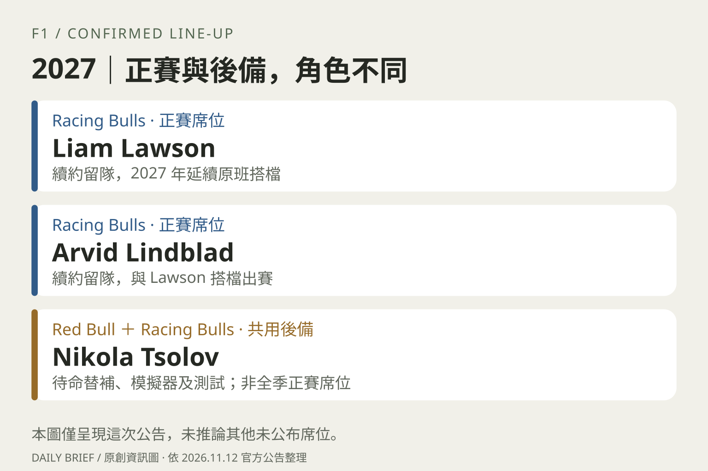

FORMULA 1 / THE ESSENTIALS
Racing Bulls 確認 2027 原班車手，Tsolov 擔任兩隊共用後備
收錄於 2026-11-13 日報 · Formula 1：Racing Bulls 續約公告
正賽陣容已確認
- Racing Bulls 確認 Liam Lawson 與 Arvid Lindblad 續約，2027 年維持原班搭檔。兩人將延續目前的隊友關係；這是車隊已確認的正賽人事安排，取代先前關於席位的猜測。
後備角色要分清
- 另一份官方報導確認 Nikola Tsolov 將擔任 Red Bull 與 Racing Bulls 的共用後備車手，必要時待命替補，並參與模擬器、更多 FP1 與舊車測試工作。
- 兩項公告合併看，Tsolov 此次取得的是後備角色，並未獲得 Racing Bulls 全季正賽席位。官方提到未來培養方向，也不等於保證日後升任；其他未公告的車隊席位仍須等正式消息。

原文與查核
以上為整理與解讀，重要細節請回到原文核對。
- Formula 1：Racing Bulls 續約公告 ↗發布 2026-11-12 · 查核 2026-11-13T05:02:18+08:00
- Formula 1：Tsolov 後備任命 ↗發布 2026-11-12 · 查核 2026-11-13T05:02:18+08:00